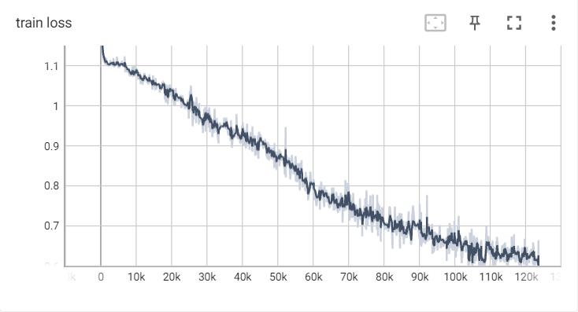
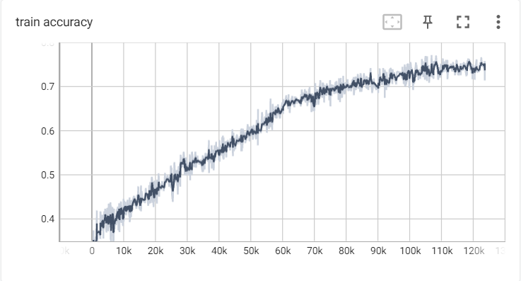
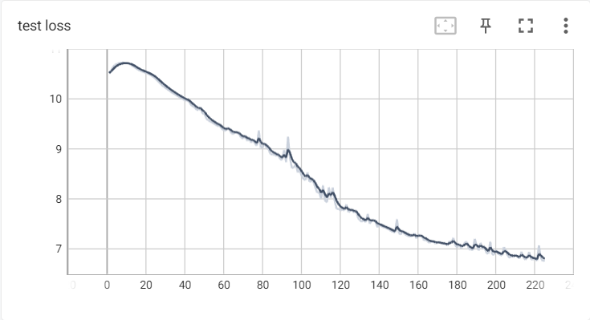
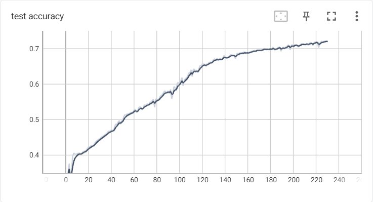

一、前言
最近半年多的时间里学了许多人工智能，尤其是深度学习的知识，但是一直没有搭建过一个较为复杂的神经网络，最多也只是一个简单的 rnn。这主要是因为自己的笔记本没有训练较大模型的能力。
因为对nlp比较感兴趣，因此最近开始尝试跟着复旦大学邱锡鹏老师的NLP入门练习搭建网络。但到任务三时自己的笔记本就无法继续训练了，于是这次我下定决心找到训练一个比较好的训练模型的方法。最终找到了 Colab。
因为使用了Colab，本次模型的构建和训练比较成功，因而做此记录。
二、任务
本次任务是输入两个句子，判断它们之间的关系。具体来说，我们需要实现论文中提出的 ESIM 网络，并通过 SNLI数据集 进行训练，以学习预测两个句子间的关系。
三、数据集
SNLI数据集包含57万行英文句子对，并被标注了句子间的关系，包括蕴含（Entailment），矛盾（Contradiction），中立/不冲突（Neutral），未知（-）。
例如
输入文本： A man inspects the uniform of a figure in some East Asian country. 输入假设： The man is sleeping. 输出： 矛盾（C）
输入文本： A smiling costumed woman is holding an umbrella. 输入假设：A happy woman in a fairy costume holds an umbrella. 输出： 中立（N）
输入文本： A soccer game with multiple males playing. 输入假设： Some men are playing a sport. 输出： 蕴含（E）
原始的数据集提供了 json 格式和制表符分割 txt 格式。在读取数据时，我们使用了制表符格式。
对于每一个文件，第一行为表头，其他行为数据。我们只需要获取 sentence1 和 sentence2 列对应的句子和 gold_label 所对应的标注。
我们创建获取SNLI数据集的 Dataset 类
class SNLIDataset(Dataset):
首先指定 sentence1、sentence2 和 gold_label 对应的列数
def __init__(self, file_path, vocab=None):
s1 = 5
s2 = 6
l = 0
训练时使用自建词汇表。我们在加载训练集时构建词汇表，在验证级和测试集中使用词汇表
if vocab is None:
self.build_vocab = True
self.vocab = {"<pad>": 0}
else:
self.build_vocab = False
self.vocab = vocab
我们打开文件，遍历其中每一行，注意这里我们使用了 tqdm 来显示进度条。同时使用了 enumerate 获取 index。当遇到第一行时 continue。
self.s1 = []
self.s2 = []
self.labels = []
with open(file_path, encoding="UTF-8") as f:
with tqdm(f) as tqdm_file:
tqdm_file.set_description("Load Data")
for index, line in enumerate(tqdm_file):
if index == 0:
continue
按制表符分割一行，取出其中的 sentence1、sentence2 和 gold_label。分别将字符串转化为 tensor 存入对应的数组中。
splited_line = line.split("\t")
sentence1 = splited_line[s1]
sentence2 = splited_line[s2]
label = splited_line[l]
self.s1.append(self.__sentence2tensor(sentence1))
self.s2.append(self.__sentence2tensor(sentence2))
self.labels.append(torch.as_tensor(labels[label]))
其中 __sentence2tensor 方法如下。该方法通过正则表达式匹配单词，构建词汇表。get_word_index 将 char 字符转化为数字 token，如果字符不在词汇表中则返回值为 0。
def __sentence2tensor(self, s):
rt = []
for char in re.findall("[a-zA-Z-]+", s):
if self.build_vocab and char not in self.vocab:
self.vocab[char] = len(self.vocab)
rt.append(get_word_index(self.vocab, char))
return torch.as_tensor(rt)
接着我们实现 __getitem__ 和 __len__ 方法。
def __getitem__(self, item):
return self.s1[item], self.s2[item], self.labels[item]
def __len__(self):
return len(self.s1)
四、神经网络
在实现的过程中，我简化了一部分流程
首先，我们定义输入的两个句子为 $a = (a_1, ..., a_{seq_a})$ 和 $b = (b_1, ..., b_{seq_b})$。其中 $a_i, b_j$ 为 $l$ 维的词向量。
依照双向注意力的机制，我们首先定义 $f(x)$。即
$$ \bar{a}_i = BiLSTM(a, i) $$ $$ \bar{b}_j = BiLSTM(b, j) $$接着，我们定义注意力权重 $e_{ij} = f(a_i)^T f(b_j)$，即
$$ e_{ij} = \bar{a}_i^T \bar{b}_j $$我们计算对某一句中的每一个词，被注意到的另一个句子中词汇的含义。
$$ \tilde{a}_i = \sum_{j} \frac{\exp(e_{ij})}{\sum_k \exp(e_{ik})} \bar{b}_j $$ $$ \tilde{b}_j = \sum_{i} \frac{\exp(e_{ij})}{\sum_k \exp(e_{kj})} \bar{a}_i $$为了获取更多的信息，ESIM 将结果组合成如下的形式
$$ m_a = [\bar{a}; \tilde{a}; \bar{a}-\tilde{a}; \bar{a} \odot \tilde{a}] $$ $$ m_b = [\bar{b}; \tilde{b}; \bar{b}-\tilde{b}; \bar{b} \odot \tilde{b}] $$接着，我们再使用 BiLSTM 对 $m_a, m_b$ 进行处理
$$ \bar{v}_{a, i} = BiLSTM(a, i) $$ $$ \bar{v}_{b, j} = BiLSTM(b, j) $$最后进行池化操作，并将结果再次连接在一起，通过多层感知机得到结果
$$ \bar{v}_{a, ave} = \sum_i \frac{\bar{v}_{a, i}}{l_a}, \bar{v}_{a, max} = \max_i \bar{v}_{a, i} $$ $$ \bar{v}_{b, ave} = \sum_j \frac{\bar{v}_{b, j}}{l_b}, \bar{v}_{b, max} = \max_j \bar{v}_{b, j} $$ $$ v = [\bar{v}_{a, ave}; \bar{v}_{a, max}; \bar{v}_{b, ave}; \bar{v}_{b, max}] $$我们开始构建模型：
class ESIM(nn.Module):
首先将单词编码转化为词向量
def forward(self, s1, s2):
a = self.embed(s1) # (batch_size,seq_size1,embed_size)
b = self.embed(s2) # (batch_size,seq_size2,embed_size)
通过 BiLSTM 层计算得出 $\bar{a}, \bar{b}$
a_, _ = self.lstm1(a) # (batch_size,seq_size1,2*hidden_size)
b_, _ = self.lstm1(b) # (batch_size,seq_size2,2*hidden_size)
接着计算出 $e$，注意这里直接使用了矩阵乘法。
e = torch.bmm(a_, b_.permute(0, 2, 1)) # (batch_size,seq_size1,seq_size2)
计算 $\tilde{a}, \tilde{b}$。使用 softmax 时，设置 dim=-1 表示对最高维求 softmax。
a_sim = torch.bmm(F.softmax(e, dim=-1), b_)
# (batch_size,seq_size1,2*hidden_size)
b_sim = torch.bmm(F.softmax(e.permute(0, 2, 1), dim=-1), a_)
# (batch_size,seq_size2,2*hidden_size)
得到 $m_a, m_b$
ma = torch.cat([a_, a_sim, a_ - a_sim, a_ * a_sim], dim=2)
# (batch_size,seq_size1,8*hidden_size)
mb = torch.cat([b_, b_sim, b_ - b_sim, b_ * b_sim], dim=2)
# (batch_size,seq_size2,8*hidden_size)
通过 BiLSTM 层计算得出 $v_a, v_b$
va, _ = self.lstm2(ma) # (batch_size,seq_size1,2*hidden_size2)
vb, _ = self.lstm2(mb) # (batch_size,seq_size2,2*hidden_size2)
池化并连接
va_ave = torch.mean(va, dim=1) # (batch_size,2*hidden_size2)
va_max, _ = torch.max(va, dim=1) # (batch_size,2*hidden_size2)
vb_ave = torch.mean(vb, dim=1) # (batch_size,2*hidden_size2)
vb_max, _ = torch.max(vb, dim=1) # (batch_size,2*hidden_size2)
v = torch.cat([va_ave, va_max, vb_ave, vb_max], dim=1)
# (batch_size,8*hidden_size2)
经过双层线性感知机得到结果
predict = self.multi(v) # (batch_size,class_num)
return predict
五、训练
部分代码
定义训练函数，声明全局训练步数和全局轮次
def train(dataloader, net, criterion, optimizer):
global global_train_step
global global_epoch
设置进度条
with tqdm(dataloader) as tqdm_loader:
tqdm_loader.set_description(f"Epoch {global_epoch}")
开始训练
net.train()
for s1, s2, target in tqdm_loader:
global_train_step += 1
s1 = s1.to(args.device)
s2 = s2.to(args.device)
target = target.to(args.device)
predict = net(s1, s2)
loss = criterion(predict, target)
accuracy = get_accuracy(predict, target)
optimizer.zero_grad()
loss.backward()
optimizer.step()
为进度条和 tensorboard 更新信息
tqdm_loader.set_postfix(loss=loss.item(), accuracy=accuracy)
writer.add_scalar("train loss", loss.item(), global_train_step)
writer.add_scalar("train accuracy", accuracy, global_train_step)
定义评价函数，参数 tag 表示验证或者测试
def evaluate(tag, dataloader, net, criterion):
global global_epoch
开始评价
total_loss = 0
accuracy = 0
total_step = 0
net.eval()
with torch.no_grad():
for s1, s2, target in dataloader:
s1 = s1.to(args.device)
s2 = s2.to(args.device)
target = target.to(args.device)
predict = net(s1, s2)
loss = criterion(predict, target)
total_loss += loss
accuracy += get_accuracy(predict, target)
total_step += 1
更新 tensorboard 信息
accuracy /= total_step
print(f"{tag}: total loss={total_loss}, accuracy={accuracy}")
writer.add_scalar(tag + " loss", total_loss, global_epoch)
writer.add_scalar(tag + " accuracy", accuracy, global_epoch)
设定参数
args = Namespace(
batch_size=512,
device=torch.device("cuda" if torch.cuda.is_available() else "cpu"),
embed_size=100,
hidden_size1=200,
hidden_size2=200,
num_layers=2,
epoch_size=15,
learning_rate=0.01,
train_path="./data/snli_1.0_train.txt",
test_path="./data/snli_1.0_test.txt",
dev_path="./data/snli_1.0_dev.txt",
log_path="./logs",
checkpoint_path="./checkpoints",
)
设定损失函数和优化器
loss_fn = nn.CrossEntropyLoss().to(args.device)
optim = torch.optim.SGD(net.parameters(), lr=args.learning_rate)
主循环
for i in range(args.epoch_size):
global_epoch += 1
train(train_loader, net, loss_fn, optim)
save_checkpoint(net, optim, global_epoch, global_train_step)
evaluate("dev", dev_loader, net, loss_fn)
evaluate("test", test_loader, net, loss_fn)
结果




模型在训练集和测试集上均取得了 72% 的准确率，和 ESTM 论文中的还有一定差距，可能的原因是
- 词向量使用了随机初始化而非GloVe初始化
- 优化器使用了 SGD 而非 Adam，导致训练过慢
- 模型的参数设置不合理
另外
- 模型中没有使用 dropout，可能导致过拟合（虽然本模型并没有出现）